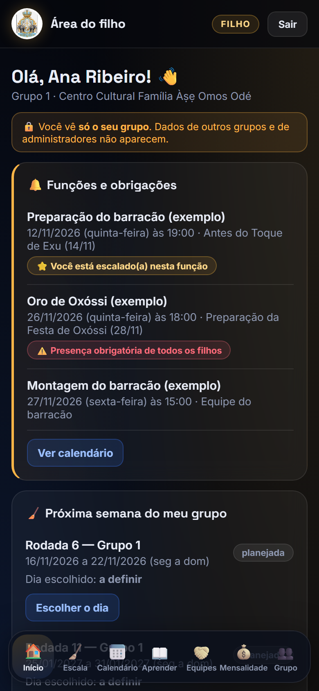
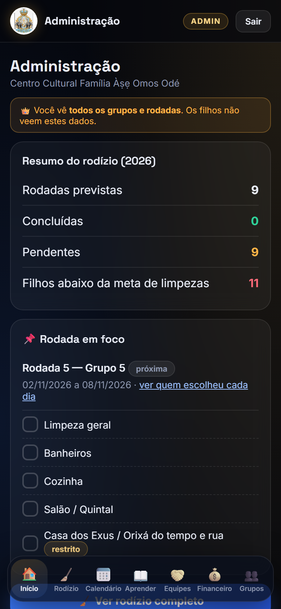
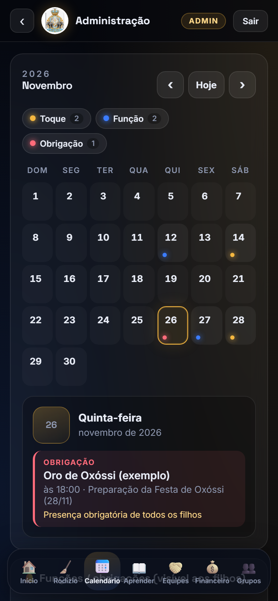

Site público e área restrita para filhos e administração
Centro Cultural Família Àṣẹ Omos Odé · São Paulo — SP · desde 1980
Apresentação · 27/10/2026 · telas com dados fictícios de demonstração
O que é
Um portal, dois mundos
Funciona no computador e no celular e pode ser instalado na tela inicial como um aplicativo, sem loja de apps.
O visual segue o esboço aprovado no vídeo “Esboço Portal”.
Site público: história, Orixás, calendário de toques, fotos e vídeos das festas, jogo de búzios pelo WhatsApp e localização.
Área restrita: cada filho acompanha sua vida na casa; a administração organiza tudo num só lugar.
Problemas que resolve
Antes
Com o portal
Escala de limpeza em planilha e grupo de mensagens
Rodízio quinzenal por grupo; cada filho escolhe o seu dia; meta de 5 limpezas por ano
Comprovantes espalhados no WhatsApp
Envio no portal; a administração confirma com um toque; o arquivo é apagado depois
Funções e toques avisados de boca
Calendário de funções (dia e responsáveis) e calendário de toques
Caixa da casa em caderno
Controle financeiro: entradas, saídas, saldo e resultado do mês
Fichas em papel
Cadastro Geral + Cadastro de filho sempre à mão
Página inicialCalendário de toques (público)
Portal Família Àṣẹ Omos Odé2
Área do filho
Tudo da casa na palma da mão
O filho vê funções e obrigações (com aviso nos Oros e se está escalado), as semanas do seu grupo,
mensalidade e festas, toques, aniversariantes, colegas do grupo (só nomes) e os seus dados.
O filho faz só três coisas:
Escolhe o dia da limpeza na semana do seu grupo — até 1 mês antes.
Envia o comprovante da mensalidade (PDF ou foto).
Envia o comprovante da contribuição da festa.

InícioEscala de limpezaCalendário
Portal Família Àṣẹ Omos Odé3
Administração
A casa organizada
Comprovantes para analisar logo na entrada: confirmar ou recusar (com motivo para o filho).
Rodízio: gera as rodadas do ano, marca os locais limpos, ajusta o dia de cada filho, mostra quem está abaixo da meta.
Controle financeiro: saldo geral, receitas e despesas do mês, categorias, mensalidades lançadas sozinhas todo dia 1º.
Calendário de funções e toques: cada função com dia, hora e quem vai fazer; toques publicados no site.
Festas, Filhos, Grupos, Áreas restritas, Galeria, Aparência do site e Auditoria.

InícioControle financeiro

Calendário de funções e toques
Portal Família Àṣẹ Omos Odé4
Confiança
Segurança, privacidade e qualidade
Acesso
Entrar com Google ou e-mail e senha (com confirmação por e-mail).
Só entra quem a administração cadastrou — ter conta Google não basta.
Cada filho vê só os próprios dados, garantido pelo banco de dados e testado a cada mudança 24 verificações
Privacidade (LGPD)
Comprovantes em área privada e apagados após a análise.
Sem dados bancários, cartão, Pix ou senha de banco: pagamentos continuam fora do portal.
Termo de consentimento no primeiro acesso; aniversário só com dia e mês.
Qualidade
Esteira DevSecOps (a cada mudança)
Também
Busca de senhas vazadas · análise de segurança do código · bibliotecas vulneráveis · testes · qualidade (SonarQube) · varredura da imagem · teste de invasão básico (OWASP ZAP). Falhas altas ou críticas bloqueiam.
Testes automáticos de ponta a ponta · monitoramento com alertas · rotinas automáticas (mensalidades e limpeza de comprovantes)
Próximos passos
Etapa
Quem
Revisar telas e textos (história, fotos, vídeos)
Casa
Definir domínio e hospedagem
Casa + equipe técnica
Ligar o “Entrar com Google” (guia pronto)
Equipe técnica
Cadastrar filhos e grupos
Administração
Revisão de segurança/LGPD e publicação
Equipe técnica
Custos: login com Google e plano gratuito do Supabase não têm custo para começar. Domínio (anual) e hospedagem são pagos — valores consultados na contratação. Nenhuma contratação foi feita.